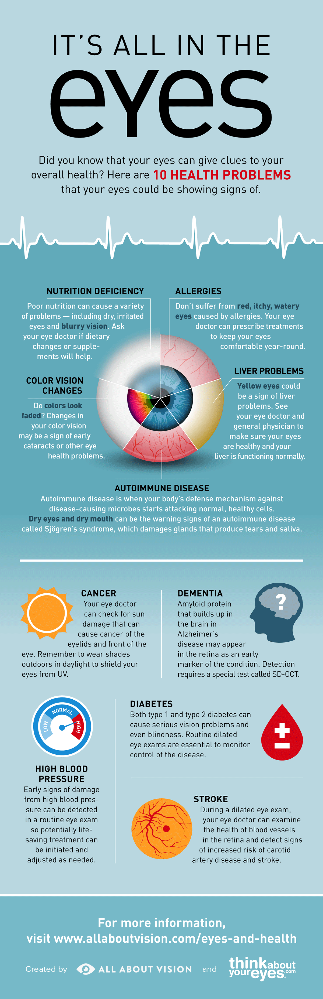
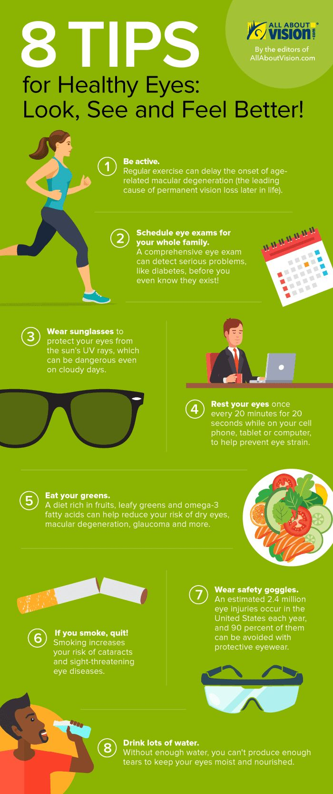

*The leading causes of blindness and low vision in the world is primarily age-related eye diseases such as age-related macular degeneration, cataract, diabetic retinopathy, and glaucoma. Other common eye disorders include amblyopia and strabismus.*
*Eye disease is one of the leading cause of death in the world, but there are ways to prevent and manage many types of eye disease.